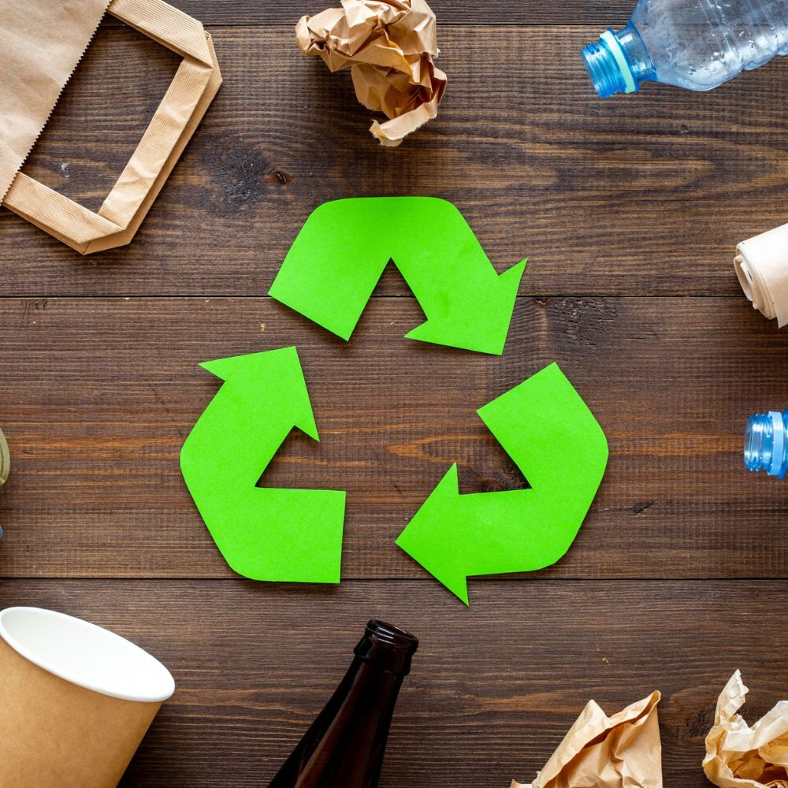
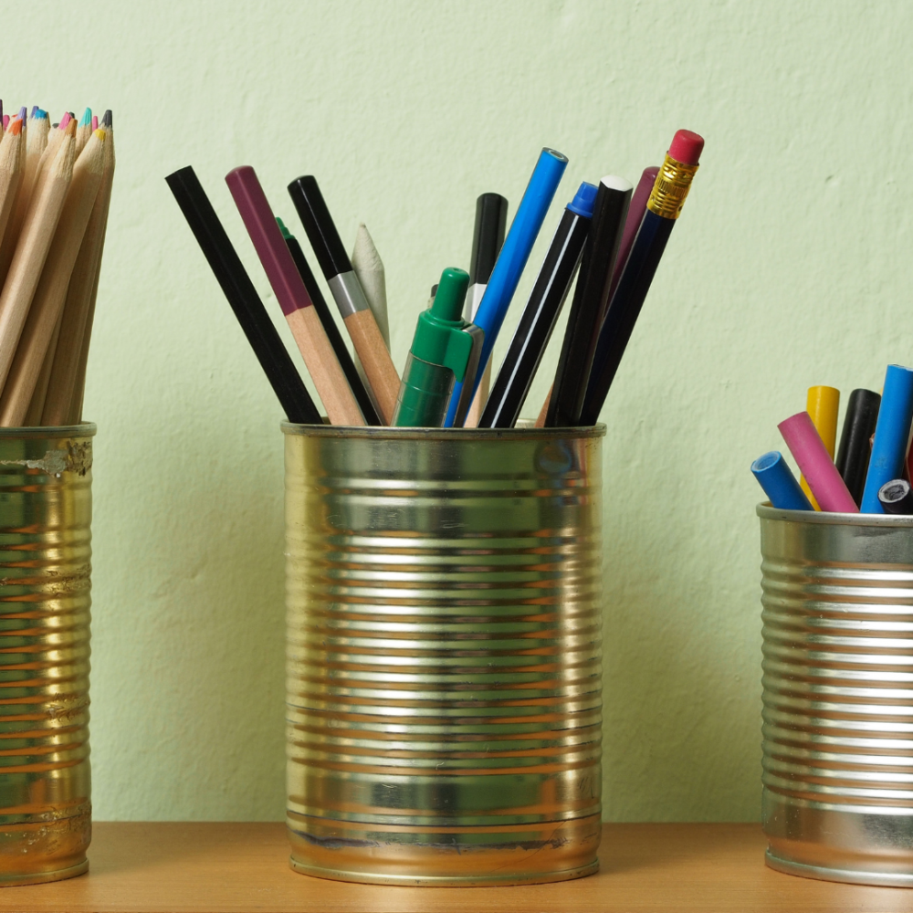
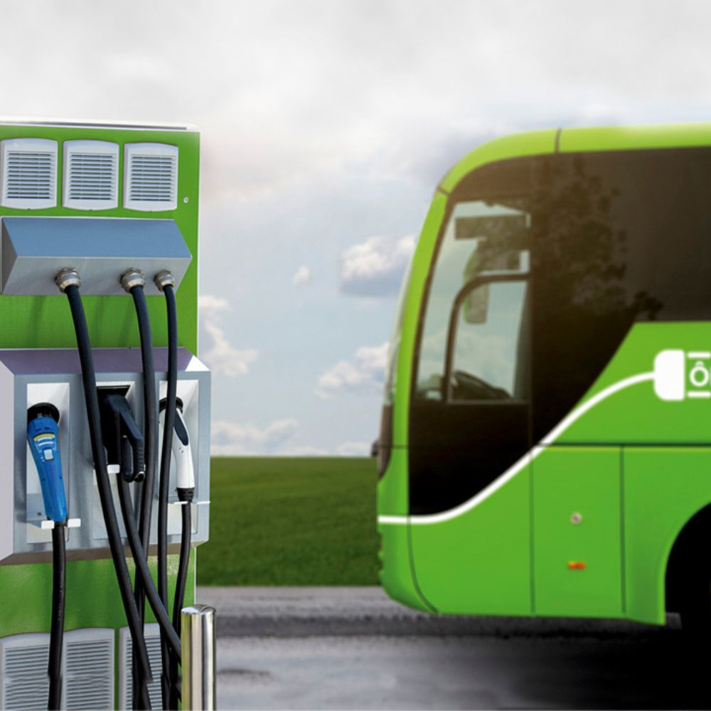
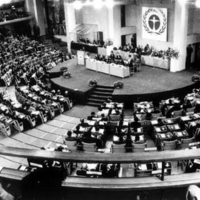
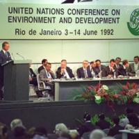
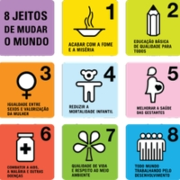
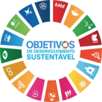

Participar de projetos ambientais, mutirões de limpeza e ações de plantio fortalece a comunidade e incentiva a responsabilidade coletiva.
Fontes como a energia solar e eólica aproveitam recursos naturais para gerar eletricidade, ajudando a reduzir a dependência de combustíveis fósseis.
Planeje suas refeições, compre apenas o necessário e aproveite os alimentos integralmente sempre que possível. Assim, você reduz o desperdício e valoriza os recursos utilizados na produção dos alimentos.




Primeira grande conferência da ONU dedicada ao meio ambiente, ampliando a discussão mundial sobre preservação ambiental.
O Relatório Brundtland popularizou o conceito de desenvolvimento sustentável, conciliando progresso econômico, bem-estar social e proteção ambiental.

A conferência realizada no Rio de Janeiro fortaleceu a cooperação internacional para proteger o meio ambiente.

A ONU estabeleceu metas globais para combater a pobreza e melhorar as condições de vida da população.

A ONU adotou os 17 Objetivos de Desenvolvimento Sustentável (ODS), com metas para um futuro mais justo e sustentável.
Economizar água, reciclar, reduzir o desperdício e consumir conscientemente são ações que todos podem praticar no dia a dia.